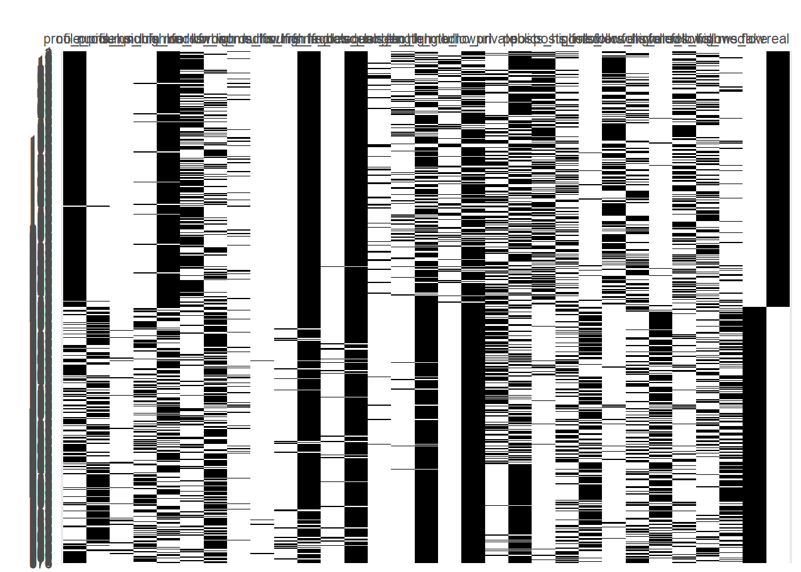

# Librerías, datasets y procesamiento previo
library(readr)
library(dplyr)
library(fcaR)
library(magrittr)
library(ggplot2)
library(psych)
library(arules)
datos <- read_csv("train.csv")
View(datos)
datos_test <- read_csv("test.csv")
View(datos_test)
datos <- rename(datos, profile_pic=`profile pic`, `nums/length_username` = `nums/length username`, fullname_words=`fullname words`, `nums/length_fullname` = `nums/length fullname`, description_length=`description length`, external_URL=`external URL`, posts=`#posts`, followers=`#followers`, follows=`#follows`)
datos_test <- rename(datos_test, profile_pic=`profile pic`, `nums/length_username` = `nums/length username`, fullname_words=`fullname words`, `nums/length_fullname` = `nums/length fullname`, description_length=`description length`, external_URL=`external URL`, posts=`#posts`, followers=`#followers`, follows=`#follows`)4 Formal Concept Analysis
4.1 Formal Concept Analysis
Ya hemos extraído información importante sobre patrones encontrados en los datos, concretamente sobre qué atributos o combinaciones de ellos determinan, con mayor o menor influencia, si una cuenta es legítima o falsa. Sin embargo, el estudio de reglas de asociación no es la única forma de extraer información en cuanto a las relaciones entre variables y el descubrimiento de patrones: es momento de estudiar lo que se conoce como “Formal Concept Analysis”.
4.1.1 Obtención de las reglas de FCA
Mi primer paso para trabajar con FCA va a consistir en construir una matriz, cuyas filas serán las cuentas del dataset, cuyas columnas serán los valores discretizados de las variables (2 columnas por cada variable binaria y 3 por cada variable numérica) y cuyas celdas serán valores 0/1, en función del valor discretizado que cumpla esa cuenta para cada variable. Es decir, trabajaremos con un formal context binario.
Para comenzar con esta aproximación, antes es necesario ajustar un poco los intervalos de las variables numéricas que hemos visto en reglas de asociación, para que haya 3 categorías (serán high, med y low). En las variables binarias seguimos el mismo procedimiento que en reglas de asociación.
datosDF_FCA_intervalos <- data.frame(datos)
View(datosDF_FCA_intervalos)
# Discretizar columnas numéricas
datosDF_FCA_intervalos$nums.length_username <- discretize(datosDF_FCA_intervalos$nums.length_username, method="interval", breaks = 3)
datosDF_FCA_intervalos$fullname_words <- discretize(datosDF_FCA_intervalos$fullname_words, method="frequency", breaks = 3)
datosDF_FCA_intervalos$nums.length_fullname <- discretize(datosDF_FCA_intervalos$nums.length_fullname, method="interval", breaks = 3)
datosDF_FCA_intervalos$description_length <- discretize(datosDF_FCA_intervalos$description_length, method="interval", breaks = 3)
datosDF_FCA_intervalos$posts <- discretize(datosDF_FCA_intervalos$posts, method="frequency", breaks = 3)
datosDF_FCA_intervalos$followers <- discretize(datosDF_FCA_intervalos$followers, method="frequency", breaks = 3)
datosDF_FCA_intervalos$follows <- discretize(datosDF_FCA_intervalos$follows, method="frequency", breaks = 3)
# Identificar las columnas binarias y numéricas
columnas_binarias <- c(1, 5, 7, 8, 12) # Índices de las columnas binarias
# Convertir columnas binarias a factores
datosDF_FCA_intervalos[, columnas_binarias] <- lapply(datosDF_FCA_intervalos[, columnas_binarias], factor)
View(datosDF_FCA_intervalos)Ya tenemos los nuevos intervalos ajustados. Ahora toca imprimir los valores de esos intervalos, que usaremos posteriormente para definir los valores de cada cuenta en la matriz:
# Obtener los niveles de cada variable recorriendo las columnas
for (col_name in names(datosDF_FCA_intervalos)) {
col <- datosDF_FCA_intervalos[[col_name]]
if (is.factor(col)) {
cat(length(levels(col)), " niveles en", col_name, ":", levels(col), "\n")
}
}2 niveles en profile_pic : 0 1
3 niveles en nums.length_username : [0,0.307) [0.307,0.613) [0.613,0.92]
3 niveles en fullname_words : [0,1) [1,2) [2,12]
3 niveles en nums.length_fullname : [0,0.333) [0.333,0.667) [0.667,1]
2 niveles en name..username : 0 1
3 niveles en description_length : [0,50) [50,100) [100,150]
2 niveles en external_URL : 0 1
2 niveles en private : 0 1
3 niveles en posts : [0,2) [2,43.3) [43.3,7.39e+03]
3 niveles en followers : [0,54.3) [54.3,415) [415,1.53e+07]
3 niveles en follows : [0,89.3) [89.3,432) [432,7.5e+03]
2 niveles en fake : 0 1 Ahora ya tenemos los valores posibles que puede tomar cada variable. En las variables binarias, naturalmente los valores posibles son 0 y 1; en las numéricas hay 3 intervalos por variable.
Lo siguiente sería definir los atributos (categorías de las variables):
datosDF_FCA <- data.frame(datos)
View(datosDF_FCA)
# Crear un vector con los nombres de los atributos (categorías)
attributes <- c("profile_pic", "no_profile_pic",
"nums_lun_high", "nums_lun_med", "nums_lun_low",
"fn_words_high", "fn_words_med", "fn_words_low",
"nums_lfn_high", "nums_lfn_med", "nums_lfn_low",
"fn_equals_un", "fn_notequals_un",
"desc_length_high", "desc_length_med", "desc_length_low",
"url", "no_url",
"private", "public",
"posts_high", "posts_med", "posts_low",
"followers_high", "followers_med", "followers_low",
"follows_high", "follows_med", "follows_low",
"fake", "real")Una vez tenemos definidos los atributos, es hora de crear el esqueleto de la matriz sobre la que aplicaremos FCA:
# Crear un vector con los nombres de las cuentas
accounts <- rownames(datosDF_FCA)
# Crear una matriz de ceros con el mismo número de filas que cuentas y el mismo número de columnas que atributos
datosFCA <- matrix(0, nrow = nrow(datosDF_FCA), ncol = length(attributes))
# Nombrar las filas y columnas
rownames(datosFCA) <- accounts
colnames(datosFCA) <- attributes
# Visualizar la matriz vacía
#datosFCANuestra matriz vacía está lista. Ahora debemos llenarla, y para ello recorreremos cada fila del data frame, y examinaremos los valores de las columnas de esa fila. En función del valor que tome (comparado con los intervalos ajustados de antes), asignaremos un 1 o un 0 en la columna (categoría) correspondiente de la matriz para esa fila:
# Iterar sobre cada fila del dataset y actualizar los valores en la matriz de acuerdo a los intervalos de las variables
for (i in 1:nrow(datosDF_FCA)) {
# profile_pic
if (datosDF_FCA[i, "profile_pic"] == 1) {
datosFCA[i, "profile_pic"] <- 1
} else {
datosFCA[i, "no_profile_pic"] <- 1
}
# nums.length_username
if (datosDF_FCA[i, "nums.length_username"] < 0.307) {
datosFCA[i, "nums_lun_low"] <- 1
} else if (datosDF_FCA[i, "nums.length_username"] < 0.613) {
datosFCA[i, "nums_lun_med"] <- 1
} else {
datosFCA[i, "nums_lun_high"] <- 1
}
# fullname_words
if (datosDF_FCA[i, "fullname_words"] < 1) {
datosFCA[i, "fn_words_low"] <- 1
} else if (datosDF_FCA[i, "fullname_words"] < 2) {
datosFCA[i, "fn_words_med"] <- 1
} else {
datosFCA[i, "fn_words_high"] <- 1
}
# nums.length_fullname
if (datosDF_FCA[i, "nums.length_fullname"] < 0.333) {
datosFCA[i, "nums_lfn_low"] <- 1
} else if (datosDF_FCA[i, "nums.length_fullname"] < 0.667) {
datosFCA[i, "nums_lfn_med"] <- 1
} else {
datosFCA[i, "nums_lfn_high"] <- 1
}
# Name.equals.username
if (datosDF_FCA[i, "name..username"] == 1) {
datosFCA[i, "fn_equals_un"] <- 1
} else {
datosFCA[i, "fn_notequals_un"] <- 1
}
# description_length
if (datosDF_FCA[i, "description_length"] < 50) {
datosFCA[i, "desc_length_low"] <- 1
} else if (datosDF_FCA[i, "description_length"] < 100) {
datosFCA[i, "desc_length_med"] <- 1
} else {
datosFCA[i, "desc_length_high"] <- 1
}
# external_URL
if (datosDF_FCA[i, "external_URL"] == 1) {
datosFCA[i, "url"] <- 1
} else {
datosFCA[i, "no_url"] <- 1
}
# private
if (datosDF_FCA[i, "private"] == 1) {
datosFCA[i, "private"] <- 1
} else {
datosFCA[i, "public"] <- 1
}
# posts
if (datosDF_FCA[i, "posts"] < 2) {
datosFCA[i, "posts_low"] <- 1
} else if (datosDF_FCA[i, "posts"] < 43.3) {
datosFCA[i, "posts_med"] <- 1
} else {
datosFCA[i, "posts_high"] <- 1
}
# followers
if (datosDF_FCA[i, "followers"] < 54.3) {
datosFCA[i, "followers_low"] <- 1
} else if (datosDF_FCA[i, "followers"] < 415) {
datosFCA[i, "followers_med"] <- 1
} else {
datosFCA[i, "followers_high"] <- 1
}
# follows
if (datosDF_FCA[i, "follows"] < 89.3) {
datosFCA[i, "follows_low"] <- 1
} else if (datosDF_FCA[i, "follows"] < 432) {
datosFCA[i, "follows_med"] <- 1
} else {
datosFCA[i, "follows_high"] <- 1
}
# fake
if (datosDF_FCA[i, "fake"] == 1) {
datosFCA[i, "fake"] <- 1
} else {
datosFCA[i, "real"] <- 1
}
}
# Visualizar la matriz llena
#datosFCAAhora viene lo interesante: convertir la matriz a un objeto formalcontext y trabajar con FCA.
# Convertir la matriz a un objeto FormalContext
fc_datos <- FormalContext$new(datosFCA)
fc_datosFormalContext with 576 objects and 31 attributes.
profile_pic no_profile_pic nums_lun_high nums_lun_med nums_lun_low
1 X X
2 X X
3 X X
4 X X
5 X X
6 X X
7 X X
8 X X
9 X X
10 X X
Other attributes are: fn_words_high, fn_words_med, fn_words_low, nums_lfn_high,
nums_lfn_med, nums_lfn_low, ... Vemos que la conversión ha sido exitosa. Además de ver la tabla, podemos hacer un plot para visualizar el resultado:
# Visualizar el formal context
fc_datos$plot()
Naturalmente, al ser tantos datos, no podemos ver bien cada fila. Sin embargo, podemos ver patrones que concuerdan con nuestro dataset: la última columna es ‘fake’, y sabemos que la primera mitad de filas son cuentas reales, y la segunda mitad, cuentas falsas, tal y como indican las barras negras del final del plot.
Observemos más de cerca el plot (5 primeras filas):
fc_datos[1:5]$plot()Como vemos, las barras negras concuerdan perfectamente con nuestro dataset. Parece que hemos tenido éxito. También podemos comprobar este éxito usando el extent y el intent:
S1 <- Set$new(fc_datos$attributes)
S1$assign(fake=1)
# Extent (filas) de las cuentas fake
S2 <- fc_datos$extent(S1)
S2{289, 290, 291, 292, 293, 294, 295, 296, 297, 298, 299, 300, 301, 302, 303, 304,
305, 306, 307, 308, 309, 310, 311, 312, 313, 314, 315, 316, 317, 318, 319,
320, 321, 322, 323, 324, 325, 326, 327, 328, 329, 330, 331, 332, 333, 334,
335, 336, 337, 338, 339, 340, 341, 342, 343, 344, 345, 346, 347, 348, 349,
350, 351, 352, 353, 354, 355, 356, 357, 358, 359, 360, 361, 362, 363, 364,
365, 366, 367, 368, 369, 370, 371, 372, 373, 374, 375, 376, 377, 378, 379,
380, 381, 382, 383, 384, 385, 386, 387, 388, 389, 390, 391, 392, 393, 394,
395, 396, 397, 398, 399, 400, 401, 402, 403, 404, 405, 406, 407, 408, 409,
410, 411, 412, 413, 414, 415, 416, 417, 418, 419, 420, 421, 422, 423, 424,
425, 426, 427, 428, 429, 430, 431, 432, 433, 434, 435, 436, 437, 438, 439,
440, 441, 442, 443, 444, 445, 446, 447, 448, 449, 450, 451, 452, 453, 454,
455, 456, 457, 458, 459, 460, 461, 462, 463, 464, 465, 466, 467, 468, 469,
470, 471, 472, 473, 474, 475, 476, 477, 478, 479, 480, 481, 482, 483, 484,
485, 486, 487, 488, 489, 490, 491, 492, 493, 494, 495, 496, 497, 498, 499,
500, 501, 502, 503, 504, 505, 506, 507, 508, 509, 510, 511, 512, 513, 514,
515, 516, 517, 518, 519, 520, 521, 522, 523, 524, 525, 526, 527, 528, 529,
530, 531, 532, 533, 534, 535, 536, 537, 538, 539, 540, 541, 542, 543, 544,
545, 546, 547, 548, 549, 550, 551, 552, 553, 554, 555, 556, 557, 558, 559,
560, 561, 562, 563, 564, 565, 566, 567, 568, 569, 570, 571, 572, 573, 574,
575, 576}El extent lista los nombres de las filas con cuentas que cumplen las condiciones establecidas en S1 (las cuentas son fake). Echando un vistazo al dataset, comprobamos que las filas de la salida (289-576) son las cuentas fake. También existe el concepto de intent, el cual devuelve el conjunto de características que comparte un conjunto de filas. Por esa lógica, si hiciéramos el intent de S2 (cuentas fake), debería devolvernos fake y no_url, dado que ninguna cuenta fake tiene URL externa:
# Intent (características) de las cuentas fake
fc_datos$intent(S2){no_url, fake}Una vez más, parece que ha habido éxito.
Ahora es momento de encontrar las implicaciones:
# Encontrar implicaciones
fc_datos$find_implications()
# Número de implicaciones encontradas
fc_datos$implications$cardinality()[1] 1292Ahora que sabemos que hay un número considerable de implicaciones, intentemos reducir la cantidad eliminando redundancias:
fc_datos$implications$apply_rules(rules = c("composition",
"generalization",
"simplification"),
parallelize = FALSE)Processing batch--> Composition: from 1292 to 1292.--> Generalization: from 1292 to 1292.--> Simplification: from 1292 to 1292.Parece que ninguna de las implicaciones originales era redundante. Echemos un vistazo a las primeras 20 implicaciones:
fc_datos$implications[1:20]Implication set with 20 implications.
Rule 1: {real} -> {nums_lfn_low}
Rule 2: {fake} -> {no_url}
Rule 3: {follows_med, follows_low} -> {profile_pic, no_profile_pic,
nums_lun_high, nums_lun_med, nums_lun_low, fn_words_high, fn_words_med,
fn_words_low, nums_lfn_high, nums_lfn_med, nums_lfn_low, fn_equals_un,
fn_notequals_un, desc_length_high, desc_length_med, desc_length_low, url,
no_url, private, public, posts_high, posts_med, posts_low, followers_high,
followers_med, followers_low, follows_high, fake, real}
Rule 4: {follows_high, follows_low} -> {profile_pic, no_profile_pic,
nums_lun_high, nums_lun_med, nums_lun_low, fn_words_high, fn_words_med,
fn_words_low, nums_lfn_high, nums_lfn_med, nums_lfn_low, fn_equals_un,
fn_notequals_un, desc_length_high, desc_length_med, desc_length_low, url,
no_url, private, public, posts_high, posts_med, posts_low, followers_high,
followers_med, followers_low, follows_med, fake, real}
Rule 5: {follows_high, follows_med} -> {profile_pic, no_profile_pic,
nums_lun_high, nums_lun_med, nums_lun_low, fn_words_high, fn_words_med,
fn_words_low, nums_lfn_high, nums_lfn_med, nums_lfn_low, fn_equals_un,
fn_notequals_un, desc_length_high, desc_length_med, desc_length_low, url,
no_url, private, public, posts_high, posts_med, posts_low, followers_high,
followers_med, followers_low, follows_low, fake, real}
Rule 6: {followers_low} -> {no_url}
Rule 7: {followers_med, follows_low} -> {nums_lfn_low, desc_length_low}
Rule 8: {followers_med, follows_high} -> {fn_notequals_un}
Rule 9: {followers_high} -> {nums_lfn_low}
Rule 10: {posts_low} -> {no_url}
Rule 11: {posts_high} -> {fn_notequals_un}
Rule 12: {public, followers_med, follows_med} -> {fn_notequals_un}
Rule 13: {public, posts_med, follows_high} -> {fn_notequals_un}
Rule 14: {private, posts_med, follows_low} -> {nums_lfn_low}
Rule 15: {private, public} -> {profile_pic, no_profile_pic, nums_lun_high,
nums_lun_med, nums_lun_low, fn_words_high, fn_words_med, fn_words_low,
nums_lfn_high, nums_lfn_med, nums_lfn_low, fn_equals_un, fn_notequals_un,
desc_length_high, desc_length_med, desc_length_low, url, no_url, posts_high,
posts_med, posts_low, followers_high, followers_med, followers_low,
follows_high, follows_med, follows_low, fake, real}
Rule 16: {followers_low, follows_med} -> {fake}
Rule 17: {followers_low, follows_high} -> {fn_words_med, desc_length_low, fake}
Rule 18: {followers_med, followers_low} -> {profile_pic, no_profile_pic,
nums_lun_high, nums_lun_med, nums_lun_low, fn_words_high, fn_words_med,
fn_words_low, nums_lfn_high, nums_lfn_med, nums_lfn_low, fn_equals_un,
fn_notequals_un, desc_length_high, desc_length_med, desc_length_low,
url, private, public, posts_high, posts_med, posts_low, followers_high,
follows_high, follows_med, follows_low, fake, real}
Rule 19: {posts_low, follows_med} -> {nums_lfn_low, desc_length_low}
Rule 20: {posts_low, follows_high} -> {desc_length_low}Ahora es el momento de extraer conocimiento con las implicaciones que nos interesan (variable fake en el consecuente de la regla).
Comencemos con las reglas cuyo consecuente es únicamente ‘fake’ (si además de fake se dejan otras variables, el resultado tiene mucho ruido y reglas extrañas):
# Implicaciones con 'fake' en el consecuente
fc_datos$implications$filter(rhs = "fake", not_rhs = attributes[-which(attributes == "fake")])Implication set with 31 implications.
Rule 1: {followers_low, follows_med} -> {fake}
Rule 2: {public, posts_low, follows_high} -> {fake}
Rule 3: {public, posts_low, followers_low} -> {fake}
Rule 4: {fn_words_low, followers_low} -> {fake}
Rule 5: {fn_words_low, private, posts_low} -> {fake}
Rule 6: {fn_words_low, posts_low, follows_med} -> {fake}
Rule 7: {fn_words_med, public, followers_low} -> {fake}
Rule 8: {fn_words_med, public, posts_med, follows_low} -> {fake}
Rule 9: {fn_words_med, posts_low, followers_low} -> {fake}
Rule 10: {fn_words_med, private, posts_low, follows_low} -> {fake}
Rule 11: {fn_equals_un, no_url} -> {fake}
Rule 12: {fn_words_med, private, posts_low, follows_med} -> {fake}
Rule 13: {fn_words_high, desc_length_low, public, followers_med, follows_high}
-> {fake}
Rule 14: {fn_words_high, public, posts_low, follows_med} -> {fake}
Rule 15: {nums_lun_low, fn_words_med, posts_med, followers_med, follows_high} ->
{fake}
Rule 16: {nums_lun_med, desc_length_low, public, follows_med} -> {fake}
Rule 17: {nums_lun_med, desc_length_low, public, followers_med} -> {fake}
Rule 18: {nums_lun_med, fn_words_med, public, posts_med} -> {fake}
Rule 19: {nums_lun_med, fn_words_high, desc_length_low, follows_med} -> {fake}
Rule 20: {nums_lun_med, fn_words_high, desc_length_low, followers_med} -> {fake}
Rule 21: {no_profile_pic, follows_low} -> {fake}
Rule 22: {no_profile_pic, followers_low} -> {fake}
Rule 23: {no_profile_pic, followers_med, follows_high} -> {fake}
Rule 24: {no_profile_pic, fn_words_low, follows_med} -> {fake}
Rule 25: {no_profile_pic, fn_words_low, desc_length_low, posts_med} -> {fake}
Rule 26: {no_profile_pic, fn_words_med, follows_high} -> {fake}
Rule 27: {no_profile_pic, fn_words_high, desc_length_low} -> {fake}
Rule 28: {fn_words_med, private, posts_high, followers_med, follows_high} ->
{fake}
Rule 29: {fn_words_high, desc_length_high, no_url, posts_med, followers_high,
follows_med} -> {fake}
Rule 30: {desc_length_high, no_url, public, posts_high, followers_med,
follows_med} -> {fake}
Rule 31: {nums_lun_med, fn_words_high, desc_length_low, posts_high,
followers_high} -> {fake}Basándonos en estas reglas, podemos considerar que una cuenta es falsa cuando identificamos ciertas combinaciones de estas características:
- Pocas o nulas publicaciones (igual que en reglas de asociación)
- Descripción vacía o muy breve (igual que en reglas de asociación)
- Ausencia de foto de perfil (igual que en reglas de asociación)
- Pocos o nulos seguidos (igual que en reglas de asociación)
- Ausencia de URL externa (igual que en reglas de asociación)
- Bajo número de seguidores
Como vemos, las conclusiones generales son muy similares a las obtenidas con arules.
Ahora veamos los antecedentes para cuentas verdaderas:
# Implicaciones con 'real' en el consecuente
fc_datos$implications$filter(rhs = "real", not_rhs = attributes[-which(attributes == "real")])Implication set with 39 implications.
Rule 1: {nums_lun_low, fn_words_low, private, posts_high} -> {real}
Rule 2: {no_profile_pic, nums_lun_low, fn_words_med, private, followers_med,
follows_med} -> {real}
Rule 3: {desc_length_med, followers_med, follows_med} -> {real}
Rule 4: {profile_pic, desc_length_med, posts_high} -> {real}
Rule 5: {desc_length_med, public, follows_med} -> {real}
Rule 6: {desc_length_high, posts_high, follows_high} -> {real}
Rule 7: {desc_length_high, posts_high, followers_high} -> {real}
Rule 8: {profile_pic, fn_words_low, posts_med, follows_med} -> {real}
Rule 9: {profile_pic, fn_words_med, public, followers_high} -> {real}
Rule 10: {fn_words_med, public, posts_high, follows_high} -> {real}
Rule 11: {fn_words_med, desc_length_high} -> {real}
Rule 12: {profile_pic, fn_words_high, desc_length_med} -> {real}
Rule 13: {posts_high, followers_high, follows_med} -> {real}
Rule 14: {nums_lun_low, public, posts_high, followers_high} -> {real}
Rule 15: {private, followers_high, follows_med} -> {real}
Rule 16: {nums_lun_low, private, posts_high, followers_med, follows_med} ->
{real}
Rule 17: {desc_length_low, followers_high, follows_med} -> {real}
Rule 18: {desc_length_low, public, posts_high, follows_med} -> {real}
Rule 19: {nums_lun_low, desc_length_low, posts_high, followers_med, follows_med}
-> {real}
Rule 20: {nums_lun_low, desc_length_med, followers_high} -> {real}
Rule 21: {nums_lun_low, desc_length_med, private, follows_high} -> {real}
Rule 22: {desc_length_high, private, follows_med} -> {real}
Rule 23: {desc_length_high, private, posts_high} -> {real}
Rule 24: {profile_pic, nums_lun_low, fn_words_low, public, follows_med} ->
{real}
Rule 25: {nums_lun_low, fn_words_low, posts_high, follows_med} -> {real}
Rule 26: {profile_pic, nums_lun_low, fn_words_low, desc_length_med} -> {real}
Rule 27: {fn_words_med, followers_high, follows_med} -> {real}
Rule 28: {nums_lun_low, fn_words_med, posts_high, followers_med, follows_med} ->
{real}
Rule 29: {nums_lun_low, fn_words_med, public, posts_high} -> {real}
Rule 30: {profile_pic, fn_words_med, public, posts_low, followers_med,
follows_med} -> {real}
Rule 31: {profile_pic, nums_lun_low, private, posts_low, follows_high} -> {real}
Rule 32: {nums_lun_low, fn_words_high, posts_high, followers_high} -> {real}
Rule 33: {fn_words_high, private, posts_high, followers_med} -> {real}
Rule 34: {profile_pic, fn_words_high, private, follows_low} -> {real}
Rule 35: {nums_lun_low, fn_words_high, posts_med, followers_low, follows_low} ->
{real}
Rule 36: {profile_pic, fn_words_high, posts_low, followers_med, follows_low} ->
{real}
Rule 37: {profile_pic, fn_words_high, private, posts_low} -> {real}
Rule 38: {fn_words_high, desc_length_high, private} -> {real}
Rule 39: {profile_pic, nums_lun_med, fn_words_med, private, posts_med,
follows_high} -> {real}Basándonos en estas reglas, podemos considerar que una cuenta es verdadera cuando identificamos ciertas combinaciones de estas características:
- Ratio de números en la longitud del username bajo (igual que en reglas de asociación)
- Cantidad considerable de palabras en el nombre completo (igual que en reglas de asociación)
- Presencia de foto de perfil (igual que en reglas de asociación)
- Descripción detallada (igual que en reglas de asociación)
- Número alto de publicaciones (igual que en reglas de asociación)
- Número considerable de seguidores (ya comentamos que este parámetro faltó en reglas de asociación, pero aquí sí aparece)
Las conclusiones generales para cuentas verdaderas también son muy similares a las obtenidas con arules.
4.1.2 Predicción
Ahora es el momento de usar las reglas obtenidas para predecir la veracidad de las cuentas en el dataset de test. Para ello, debemos organizar los datos de test de la misma forma que los de entrenamiento. Como me ha gustado el modo de trabajar con el formato de reglas de arules, primero convertiré las reglas obtenidas a arules para poder aplicarlas a los datos de test.
# Convertir las implicaciones a reglas de asociación
reglas_FCA <- fc_datos$implications$to_arules()
# Mostrar la primera regla obtenida
inspect(reglas_FCA[1]) lhs rhs support confidence lift count addedValue boost
[1] {real} => {nums_lfn_low} 0.5 1 1.041591 288 0.03993056 Inf
casualConfidence casualSupport centeredConfidence certainty chiSquared
[1] 1 1.460069 0.03993056 1 23.9566
collectiveStrength confirmedConfidence conviction cosine counterexample
[1] 25.98511 1 Inf 0.7216617 1
coverage doc fishersExactTest gini hyperConfidence hyperLift
[1] 0.5 0.07986111 7.546462e-08 0.003188899 0.9999999 1.021277
imbalance implicationIndex importance improvement jaccard jMeasure
[1] 0.4792043 -3.391165 0.03601621 1 0.5207957 NaN
kappa kulczynski lambda laplace leastContradiction lerman
[1] 0.07986111 0.7603978 0 0.9965517 0.5207957 0.6915925
leverage LIC maxconfidence mutualInformation oddsRatio phi
[1] 0.01996528 Inf 1 NaN Inf 0.2039395
ralambondrainy relativeRisk rhsSupport RLD rulePowerFactor sebag stdLift
[1] 0 1.086792 0.9600694 1 0.5 Inf 1
table.n11 table.n01 table.n10 table.n00 varyingLiaison yuleQ yuleY
[1] 288 265 0 23 0.04159132 NaN NaN Mostremos el número de reglas obtenidas, que debería ser 1292:
# Número de reglas obtenidas
length(reglas_FCA)[1] 1292Parece que las reglas se han convertido con éxito a formato arules.
Ahora, debemos crear una matriz de datos de test con las mismas características que la matriz de datos de entrenamiento:
# Crear un vector con los nombres de las cuentas
accounts <- rownames(datos_test)
# Crear lista con atributos para las filas de test (sin real ni fake)
attributes_test <- attributes[-which(attributes %in% c("fake", "real"))]
# Crear una matriz de ceros con el mismo número de filas que cuentas y el mismo número de columnas que atributos
datosFCA_test <- matrix(0, nrow = nrow(datos_test), ncol = length(attributes_test))
# Nombrar las filas y columnas
rownames(datosFCA_test) <- accounts
colnames(datosFCA_test) <- attributes_test
# Visualizar la matriz vacía
#datosFCA_testAhora, debemos llenar la matriz de datos de test con los valores correspondientes a cada cuenta, fijándonos en los intervalos generados para las cuentas de entrenamiento:
datosDF_FCA_test <- data.frame(datos_test)
# Iterar sobre cada fila del dataset y actualizar los valores en la matriz de acuerdo a los intervalos de las variables
for (i in 1:nrow(datosDF_FCA_test)) {
# profile_pic
if (datosDF_FCA_test[i, "profile_pic"] == 1) {
datosFCA_test[i, "profile_pic"] <- 1
} else {
datosFCA_test[i, "no_profile_pic"] <- 1
}
# nums.length_username
if (datosDF_FCA_test[i, "nums.length_username"] < 0.307) {
datosFCA_test[i, "nums_lun_low"] <- 1
} else if (datosDF_FCA_test[i, "nums.length_username"] < 0.613) {
datosFCA_test[i, "nums_lun_med"] <- 1
} else {
datosFCA_test[i, "nums_lun_high"] <- 1
}
# fullname_words
if (datosDF_FCA_test[i, "fullname_words"] < 1) {
datosFCA_test[i, "fn_words_low"] <- 1
} else if (datosDF_FCA_test[i, "fullname_words"] < 2) {
datosFCA_test[i, "fn_words_med"] <- 1
} else {
datosFCA_test[i, "fn_words_high"] <- 1
}
# nums.length_fullname
if (datosDF_FCA_test[i, "nums.length_fullname"] < 0.333) {
datosFCA_test[i, "nums_lfn_low"] <- 1
} else if (datosDF_FCA_test[i, "nums.length_fullname"] < 0.667) {
datosFCA_test[i, "nums_lfn_med"] <- 1
} else {
datosFCA_test[i, "nums_lfn_high"] <- 1
}
# Name.equals.username
if (datosDF_FCA_test[i, "name..username"] == 1) {
datosFCA_test[i, "fn_equals_un"] <- 1
} else {
datosFCA_test[i, "fn_notequals_un"] <- 1
}
# description_length
if (datosDF_FCA_test[i, "description_length"] < 50) {
datosFCA_test[i, "desc_length_low"] <- 1
} else if (datosDF_FCA_test[i, "description_length"] < 100) {
datosFCA_test[i, "desc_length_med"] <- 1
} else {
datosFCA_test[i, "desc_length_high"] <- 1
}
# external_URL
if (datosDF_FCA_test[i, "external_URL"] == 1) {
datosFCA_test[i, "url"] <- 1
} else {
datosFCA_test[i, "no_url"] <- 1
}
# private
if (datosDF_FCA_test[i, "private"] == 1) {
datosFCA_test[i, "private"] <- 1
} else {
datosFCA_test[i, "public"] <- 1
}
# posts
if (datosDF_FCA_test[i, "posts"] < 2) {
datosFCA_test[i, "posts_low"] <- 1
} else if (datosDF_FCA_test[i, "posts"] < 43.3) {
datosFCA_test[i, "posts_med"] <- 1
} else {
datosFCA_test[i, "posts_high"] <- 1
}
# followers
if (datosDF_FCA_test[i, "followers"] < 54.3) {
datosFCA_test[i, "followers_low"] <- 1
} else if (datosDF_FCA_test[i, "followers"] < 415) {
datosFCA_test[i, "followers_med"] <- 1
} else {
datosFCA_test[i, "followers_high"] <- 1
}
# follows
if (datosDF_FCA_test[i, "follows"] < 89.3) {
datosFCA_test[i, "follows_low"] <- 1
} else if (datosDF_FCA_test[i, "follows"] < 432) {
datosFCA_test[i, "follows_med"] <- 1
} else {
datosFCA_test[i, "follows_high"] <- 1
}
}
# Visualizar la matriz llena
#datosFCA_testAhora es momento de filtrar el gran número de reglas obtenidas, para quedarnos solo con las que contienen ‘fake’ o ‘real’ en el consecuente, empezando por las ‘fake’:
reglas_FCA_fake <- subset(reglas_FCA, subset = rhs %oin% "fake")
# Desechar las reglas con count < 15
reglas_FCA_fake <- subset(reglas_FCA_fake, subset = count >= 15)
inspect(reglas_FCA_fake) lhs rhs support confidence lift count addedValue boost casualConfidence casualSupport centeredConfidence certainty chiSquared collectiveStrength confirmedConfidence conviction cosine counterexample coverage doc fishersExactTest gini hyperConfidence hyperLift imbalance implicationIndex importance improvement jaccard jMeasure kappa kulczynski lambda laplace leastContradiction lerman leverage LIC maxconfidence mutualInformation oddsRatio phi ralambondrainy relativeRisk rhsSupport RLD rulePowerFactor sebag stdLift table.n11 table.n01 table.n10 table.n00 varyingLiaison yuleQ yuleY
[1] {followers_low,
follows_med} => {fake} 0.06423611 1 2 37 0.5 Inf 1 0.5642361 0.5 1 39.53989 613.3101 1 Inf 0.3584302 1 0.06423611 0.5343228 2.115216e-12 0.03432282 1.0000000 1.480000 0.8715278 -4.301163 0.3205157 1 0.12847222 NaN 0.12847222 0.5642361 0.12847222 0.9743590 0.12847222 4.301163 0.03211806 Inf 1 NaN Inf 0.2620031 0 2.147410 0.5 1 0.06423611 Inf 1 37 251 0 288 1 NaN NaN
[2] {public,
posts_low,
followers_low} => {fake} 0.15451389 1 2 89 0.5 Inf 1 0.6545139 0.5 1 105.26489 809.1431 1 Inf 0.5559027 1 0.15451389 0.5913758 5.015407e-31 0.09137577 1.0000000 1.618182 0.6909722 -6.670832 0.3834800 1 0.30902778 NaN 0.30902778 0.6545139 0.30902778 0.9890110 0.30902778 6.670832 0.07725694 Inf 1 NaN Inf 0.4274945 0 2.447236 0.5 1 0.15451389 Inf 1 89 199 0 288 1 NaN NaN
[3] {fn_words_low,
followers_low} => {fake} 0.03125000 1 2 18 0.5 Inf 1 0.5312500 0.5 1 18.58065 528.2006 1 Inf 0.2500000 1 0.03125000 0.5161290 2.900458e-06 0.01612903 0.9999971 1.285714 0.9375000 -3.000000 0.2929423 1 0.06250000 NaN 0.06250000 0.5312500 0.06250000 0.9500000 0.06250000 3.000000 0.01562500 Inf 1 NaN Inf 0.1796053 0 2.066667 0.5 1 0.03125000 Inf 1 18 270 0 288 1 NaN NaN
[4] {fn_words_med,
public,
followers_low} => {fake} 0.13715278 1 2 79 0.5 Inf 1 0.6371528 0.5 1 91.55734 767.2505 1 Inf 0.5237419 1 0.13715278 0.5794769 3.294503e-27 0.07947686 1.0000000 1.612245 0.7256944 -6.284903 0.3704862 1 0.27430556 NaN 0.27430556 0.6371528 0.27430556 0.9876543 0.27430556 6.284903 0.06857639 Inf 1 NaN Inf 0.3986900 0 2.377990 0.5 1 0.13715278 Inf 1 79 209 0 288 1 NaN NaN
[5] {fn_words_med,
public,
posts_med,
follows_low} => {fake} 0.02777778 1 2 16 0.5 Inf 1 0.5277778 0.5 1 16.45714 515.0913 1 Inf 0.2357023 1 0.02777778 0.5142857 1.231766e-05 0.01428571 0.9999877 1.333333 0.9444444 -2.828427 0.2887501 1 0.05555556 NaN 0.05555556 0.5277778 0.05555556 0.9444444 0.05555556 2.828427 0.01388889 Inf 1 NaN Inf 0.1690309 0 2.058824 0.5 1 0.02777778 Inf 1 16 272 0 288 1 NaN NaN
[6] {fn_words_med,
posts_low,
followers_low} => {fake} 0.17881944 1 2 103 0.5 Inf 1 0.6788194 0.5 1 125.42918 874.2635 1 Inf 0.5980292 1 0.17881944 0.6088795 1.372490e-36 0.10887949 1.0000000 1.661290 0.6423611 -7.176350 0.4030247 1 0.35763889 NaN 0.35763889 0.6788194 0.35763889 0.9904762 0.35763889 7.176350 0.08940972 Inf 1 NaN Inf 0.4666465 0 2.556757 0.5 1 0.17881944 Inf 1 103 185 0 288 1 NaN NaN
[7] {fn_words_med,
private,
posts_low,
follows_low} => {fake} 0.05034722 1 2 29 0.5 Inf 1 0.5503472 0.5 1 30.53748 582.2801 1 Inf 0.3173239 1 0.05034722 0.5265082 8.870185e-10 0.02650823 1.0000000 1.380952 0.8993056 -3.807887 0.3103586 1 0.10069444 NaN 0.10069444 0.5503472 0.10069444 0.9677419 0.10069444 3.807887 0.02517361 Inf 1 NaN Inf 0.2302530 0 2.111969 0.5 1 0.05034722 Inf 1 29 259 0 288 1 NaN NaN
[8] {fn_equals_un,
no_url} => {fake} 0.03298611 1 2 19 0.5 Inf 1 0.5329861 0.5 1 19.64811 534.1926 1 Inf 0.2568506 1 0.03298611 0.5170557 1.403447e-06 0.01705566 0.9999986 1.357143 0.9340278 -3.082207 0.2948587 1 0.06597222 NaN 0.06597222 0.5329861 0.06597222 0.9523810 0.06597222 3.082207 0.01649306 Inf 1 NaN Inf 0.1846925 0 2.070632 0.5 1 0.03298611 Inf 1 19 269 0 288 1 NaN NaN
[9] {nums_lun_med,
desc_length_low,
public,
follows_med} => {fake} 0.02951389 1 2 17 0.5 Inf 1 0.5295139 0.5 1 17.51699 521.8531 1 Inf 0.2429563 1 0.02951389 0.5152057 5.982863e-06 0.01520572 0.9999940 1.307692 0.9409722 -2.915476 0.2909129 1 0.05902778 NaN 0.05902778 0.5295139 0.05902778 0.9473684 0.05902778 2.915476 0.01475694 Inf 1 NaN Inf 0.1743888 0 2.062731 0.5 1 0.02951389 Inf 1 17 271 0 288 1 NaN NaN
[10] {nums_lun_med,
desc_length_low,
public,
followers_med} => {fake} 0.05381944 1 2 31 0.5 Inf 1 0.5538194 0.5 1 32.76330 590.3937 1 Inf 0.3280837 1 0.05381944 0.5284404 1.984596e-10 0.02844037 1.0000000 1.409091 0.8923611 -3.937004 0.3130037 1 0.10763889 NaN 0.10763889 0.5538194 0.10763889 0.9696970 0.10763889 3.937004 0.02690972 Inf 1 NaN Inf 0.2384968 0 2.120623 0.5 1 0.05381944 Inf 1 31 257 0 288 1 NaN NaN
[11] {nums_lun_med,
fn_words_med,
public,
posts_med} => {fake} 0.04166667 1 2 24 0.5 Inf 1 0.5416667 0.5 1 25.04348 560.2747 1 Inf 0.2886751 1 0.04166667 0.5217391 3.616297e-08 0.02173913 1.0000000 1.411765 0.9166667 -3.464102 0.3032306 1 0.08333333 NaN 0.08333333 0.5416667 0.08333333 0.9615385 0.08333333 3.464102 0.02083333 Inf 1 NaN Inf 0.2085144 0 2.090909 0.5 1 0.04166667 Inf 1 24 264 0 288 1 NaN NaN
[12] {no_profile_pic,
follows_low} => {fake} 0.19965278 1 2 115 0.5 Inf 1 0.6996528 0.5 1 143.68764 937.6847 1 Inf 0.6319063 1 0.19965278 0.6247289 1.406311e-41 0.12472885 1.0000000 1.666667 0.6006944 -7.582875 0.4213039 1 0.39930556 NaN 0.39930556 0.6996528 0.39930556 0.9914530 0.39930556 7.582875 0.09982639 Inf 1 NaN Inf 0.4994574 0 2.664740 0.5 1 0.19965278 Inf 1 115 173 0 288 1 NaN NaN
[13] {no_profile_pic,
followers_low} => {fake} 0.22222222 1 2 128 0.5 Inf 1 0.7222222 0.5 1 164.57143 1016.5052 1 Inf 0.6666667 1 0.22222222 0.6428571 3.076242e-47 0.14285714 1.0000000 1.684211 0.5555556 -8.000000 0.4430330 1 0.44444444 NaN 0.44444444 0.7222222 0.44444444 0.9923077 0.44444444 8.000000 0.11111111 Inf 1 NaN Inf 0.5345225 0 2.800000 0.5 1 0.22222222 Inf 1 128 160 0 288 1 NaN NaN
[14] {no_profile_pic,
fn_words_med,
follows_high} => {fake} 0.03298611 1 2 19 0.5 Inf 1 0.5329861 0.5 1 19.64811 534.1926 1 Inf 0.2568506 1 0.03298611 0.5170557 1.403447e-06 0.01705566 0.9999986 1.357143 0.9340278 -3.082207 0.2948587 1 0.06597222 NaN 0.06597222 0.5329861 0.06597222 0.9523810 0.06597222 3.082207 0.01649306 Inf 1 NaN Inf 0.1846925 0 2.070632 0.5 1 0.03298611 Inf 1 19 269 0 288 1 NaN NaN
[15] {no_profile_pic,
fn_words_high,
desc_length_low} => {fake} 0.05208333 1 2 30 0.5 Inf 1 0.5520833 0.5 1 31.64835 586.3752 1 Inf 0.3227486 1 0.05208333 0.5274725 4.199960e-10 0.02747253 1.0000000 1.428571 0.8958333 -3.872983 0.3116925 1 0.10416667 NaN 0.10416667 0.5520833 0.10416667 0.9687500 0.10416667 3.872983 0.02604167 Inf 1 NaN Inf 0.2344036 0 2.116279 0.5 1 0.05208333 Inf 1 30 258 0 288 1 NaN NaNComo vemos, hay 15 reglas. Ahora, hagamos lo mismo con las reglas que contienen ‘real’ en el consecuente:
reglas_FCA_real <- subset(reglas_FCA, subset = rhs %oin% "real")
# Desechar las reglas con count < 15
reglas_FCA_real <- subset(reglas_FCA_real, subset = count >= 15)
inspect(reglas_FCA_real) lhs rhs support confidence lift count addedValue boost casualConfidence casualSupport centeredConfidence certainty chiSquared collectiveStrength confirmedConfidence conviction cosine counterexample coverage doc fishersExactTest gini hyperConfidence hyperLift imbalance implicationIndex importance improvement jaccard jMeasure kappa kulczynski lambda laplace leastContradiction lerman leverage LIC maxconfidence mutualInformation oddsRatio phi ralambondrainy relativeRisk rhsSupport RLD rulePowerFactor sebag stdLift table.n11 table.n01 table.n10 table.n00 varyingLiaison yuleQ yuleY
[1] {profile_pic,
desc_length_med,
posts_high} => {real} 0.07118056 1 2 41 0.5 Inf 1 0.5711806 0.5 1 44.14206 627.8511 1 Inf 0.3773077 1 0.07118056 0.5383178 9.819951e-14 0.03831776 1.0000000 1.464286 0.8576389 -4.527693 0.3253034 1 0.14236111 NaN 0.14236111 0.5711806 0.14236111 0.9767442 0.14236111 4.527693 0.03559028 Inf 1 NaN Inf 0.2768312 0 2.165992 0.5 1 0.07118056 Inf 1 41 247 0 288 1 NaN NaN
[2] {desc_length_med,
public,
follows_med} => {real} 0.03125000 1 2 18 0.5 Inf 1 0.5312500 0.5 1 18.58065 528.2006 1 Inf 0.2500000 1 0.03125000 0.5161290 2.900458e-06 0.01612903 0.9999971 1.285714 0.9375000 -3.000000 0.2929423 1 0.06250000 NaN 0.06250000 0.5312500 0.06250000 0.9500000 0.06250000 3.000000 0.01562500 Inf 1 NaN Inf 0.1796053 0 2.066667 0.5 1 0.03125000 Inf 1 18 270 0 288 1 NaN NaN
[3] {desc_length_high,
posts_high,
follows_high} => {real} 0.02951389 1 2 17 0.5 Inf 1 0.5295139 0.5 1 17.51699 521.8531 1 Inf 0.2429563 1 0.02951389 0.5152057 5.982863e-06 0.01520572 0.9999940 1.307692 0.9409722 -2.915476 0.2909129 1 0.05902778 NaN 0.05902778 0.5295139 0.05902778 0.9473684 0.05902778 2.915476 0.01475694 Inf 1 NaN Inf 0.1743888 0 2.062731 0.5 1 0.02951389 Inf 1 17 271 0 288 1 NaN NaN
[4] {desc_length_high,
posts_high,
followers_high} => {real} 0.03993056 1 2 23 0.5 Inf 1 0.5399306 0.5 1 23.95660 555.4687 1 Inf 0.2825971 1 0.03993056 0.5207957 7.546462e-08 0.02079566 0.9999999 1.352941 0.9201389 -3.391165 0.3016826 1 0.07986111 NaN 0.07986111 0.5399306 0.07986111 0.9600000 0.07986111 3.391165 0.01996528 Inf 1 NaN Inf 0.2039395 0 2.086792 0.5 1 0.03993056 Inf 1 23 265 0 288 1 NaN NaN
[5] {profile_pic,
fn_words_med,
public,
followers_high} => {real} 0.05208333 1 2 30 0.5 Inf 1 0.5520833 0.5 1 31.64835 586.3752 1 Inf 0.3227486 1 0.05208333 0.5274725 4.199960e-10 0.02747253 1.0000000 1.428571 0.8958333 -3.872983 0.3116925 1 0.10416667 NaN 0.10416667 0.5520833 0.10416667 0.9687500 0.10416667 3.872983 0.02604167 Inf 1 NaN Inf 0.2344036 0 2.116279 0.5 1 0.05208333 Inf 1 30 258 0 288 1 NaN NaN
[6] {fn_words_med,
public,
posts_high,
follows_high} => {real} 0.03993056 1 2 23 0.5 Inf 1 0.5399306 0.5 1 23.95660 555.4687 1 Inf 0.2825971 1 0.03993056 0.5207957 7.546462e-08 0.02079566 0.9999999 1.352941 0.9201389 -3.391165 0.3016826 1 0.07986111 NaN 0.07986111 0.5399306 0.07986111 0.9600000 0.07986111 3.391165 0.01996528 Inf 1 NaN Inf 0.2039395 0 2.086792 0.5 1 0.03993056 Inf 1 23 265 0 288 1 NaN NaN
[7] {profile_pic,
fn_words_high,
desc_length_med} => {real} 0.07118056 1 2 41 0.5 Inf 1 0.5711806 0.5 1 44.14206 627.8511 1 Inf 0.3773077 1 0.07118056 0.5383178 9.819951e-14 0.03831776 1.0000000 1.464286 0.8576389 -4.527693 0.3253034 1 0.14236111 NaN 0.14236111 0.5711806 0.14236111 0.9767442 0.14236111 4.527693 0.03559028 Inf 1 NaN Inf 0.2768312 0 2.165992 0.5 1 0.07118056 Inf 1 41 247 0 288 1 NaN NaN
[8] {posts_high,
followers_high,
follows_med} => {real} 0.05729167 1 2 33 0.5 Inf 1 0.5572917 0.5 1 35.00552 598.2335 1 Inf 0.3385016 1 0.05729167 0.5303867 4.404026e-11 0.03038674 1.0000000 1.434783 0.8854167 -4.062019 0.3155674 1 0.11458333 NaN 0.11458333 0.5572917 0.11458333 0.9714286 0.11458333 4.062019 0.02864583 Inf 1 NaN Inf 0.2465228 0 2.129412 0.5 1 0.05729167 Inf 1 33 255 0 288 1 NaN NaN
[9] {nums_lun_low,
public,
posts_high,
followers_high} => {real} 0.18402778 1 2 106 0.5 Inf 1 0.6840278 0.5 1 129.90638 889.3893 1 Inf 0.6066758 1 0.18402778 0.6127660 8.130661e-38 0.11276596 1.0000000 1.656250 0.6319444 -7.280110 0.4074509 1 0.36805556 NaN 0.36805556 0.6840278 0.36805556 0.9907407 0.36805556 7.280110 0.09201389 Inf 1 NaN Inf 0.4749020 0 2.582418 0.5 1 0.18402778 Inf 1 106 182 0 288 1 NaN NaN
[10] {desc_length_low,
followers_high,
follows_med} => {real} 0.03819444 1 2 22 0.5 Inf 1 0.5381944 0.5 1 22.87365 550.4844 1 Inf 0.2763854 1 0.03819444 0.5198556 1.571707e-07 0.01985560 0.9999998 1.375000 0.9236111 -3.316625 0.3000801 1 0.07638889 NaN 0.07638889 0.5381944 0.07638889 0.9583333 0.07638889 3.316625 0.01909722 Inf 1 NaN Inf 0.1992767 0 2.082707 0.5 1 0.03819444 Inf 1 22 266 0 288 1 NaN NaN
[11] {nums_lun_low,
desc_length_med,
followers_high} => {real} 0.07118056 1 2 41 0.5 Inf 1 0.5711806 0.5 1 44.14206 627.8511 1 Inf 0.3773077 1 0.07118056 0.5383178 9.819951e-14 0.03831776 1.0000000 1.464286 0.8576389 -4.527693 0.3253034 1 0.14236111 NaN 0.14236111 0.5711806 0.14236111 0.9767442 0.14236111 4.527693 0.03559028 Inf 1 NaN Inf 0.2768312 0 2.165992 0.5 1 0.07118056 Inf 1 41 247 0 288 1 NaN NaN
[12] {nums_lun_low,
fn_words_med,
public,
posts_high} => {real} 0.05034722 1 2 29 0.5 Inf 1 0.5503472 0.5 1 30.53748 582.2801 1 Inf 0.3173239 1 0.05034722 0.5265082 8.870185e-10 0.02650823 1.0000000 1.380952 0.8993056 -3.807887 0.3103586 1 0.10069444 NaN 0.10069444 0.5503472 0.10069444 0.9677419 0.10069444 3.807887 0.02517361 Inf 1 NaN Inf 0.2302530 0 2.111969 0.5 1 0.05034722 Inf 1 29 259 0 288 1 NaN NaN
[13] {nums_lun_low,
fn_words_high,
posts_high,
followers_high} => {real} 0.16840278 1 2 97 0.5 Inf 1 0.6684028 0.5 1 116.64301 845.3149 1 Inf 0.5803495 1 0.16840278 0.6012526 3.581861e-34 0.10125261 1.0000000 1.644068 0.6631944 -6.964194 0.3944347 1 0.33680556 NaN 0.33680556 0.6684028 0.33680556 0.9898990 0.33680556 6.964194 0.08420139 Inf 1 NaN Inf 0.4500058 0 2.507853 0.5 1 0.16840278 Inf 1 97 191 0 288 1 NaN NaNVemos que hay 13 reglas. Ahora, unamos las reglas de cuentas falsas y verdaderas en una variable:
# Guardar la unión de las reglas fake y real
reglas_FCA_real_fake <- c(reglas_FCA_fake, reglas_FCA_real)
inspect(reglas_FCA_real_fake) lhs rhs support confidence lift count addedValue boost casualConfidence casualSupport centeredConfidence certainty chiSquared collectiveStrength confirmedConfidence conviction cosine counterexample coverage doc fishersExactTest gini hyperConfidence hyperLift imbalance implicationIndex importance improvement jaccard jMeasure kappa kulczynski lambda laplace leastContradiction lerman leverage LIC maxconfidence mutualInformation oddsRatio phi ralambondrainy relativeRisk rhsSupport RLD rulePowerFactor sebag stdLift table.n11 table.n01 table.n10 table.n00 varyingLiaison yuleQ yuleY
[1] {followers_low,
follows_med} => {fake} 0.06423611 1 2 37 0.5 Inf 1 0.5642361 0.5 1 39.53989 613.3101 1 Inf 0.3584302 1 0.06423611 0.5343228 2.115216e-12 0.03432282 1.0000000 1.480000 0.8715278 -4.301163 0.3205157 1 0.12847222 NaN 0.12847222 0.5642361 0.12847222 0.9743590 0.12847222 4.301163 0.03211806 Inf 1 NaN Inf 0.2620031 0 2.147410 0.5 1 0.06423611 Inf 1 37 251 0 288 1 NaN NaN
[2] {public,
posts_low,
followers_low} => {fake} 0.15451389 1 2 89 0.5 Inf 1 0.6545139 0.5 1 105.26489 809.1431 1 Inf 0.5559027 1 0.15451389 0.5913758 5.015407e-31 0.09137577 1.0000000 1.618182 0.6909722 -6.670832 0.3834800 1 0.30902778 NaN 0.30902778 0.6545139 0.30902778 0.9890110 0.30902778 6.670832 0.07725694 Inf 1 NaN Inf 0.4274945 0 2.447236 0.5 1 0.15451389 Inf 1 89 199 0 288 1 NaN NaN
[3] {fn_words_low,
followers_low} => {fake} 0.03125000 1 2 18 0.5 Inf 1 0.5312500 0.5 1 18.58065 528.2006 1 Inf 0.2500000 1 0.03125000 0.5161290 2.900458e-06 0.01612903 0.9999971 1.285714 0.9375000 -3.000000 0.2929423 1 0.06250000 NaN 0.06250000 0.5312500 0.06250000 0.9500000 0.06250000 3.000000 0.01562500 Inf 1 NaN Inf 0.1796053 0 2.066667 0.5 1 0.03125000 Inf 1 18 270 0 288 1 NaN NaN
[4] {fn_words_med,
public,
followers_low} => {fake} 0.13715278 1 2 79 0.5 Inf 1 0.6371528 0.5 1 91.55734 767.2505 1 Inf 0.5237419 1 0.13715278 0.5794769 3.294503e-27 0.07947686 1.0000000 1.612245 0.7256944 -6.284903 0.3704862 1 0.27430556 NaN 0.27430556 0.6371528 0.27430556 0.9876543 0.27430556 6.284903 0.06857639 Inf 1 NaN Inf 0.3986900 0 2.377990 0.5 1 0.13715278 Inf 1 79 209 0 288 1 NaN NaN
[5] {fn_words_med,
public,
posts_med,
follows_low} => {fake} 0.02777778 1 2 16 0.5 Inf 1 0.5277778 0.5 1 16.45714 515.0913 1 Inf 0.2357023 1 0.02777778 0.5142857 1.231766e-05 0.01428571 0.9999877 1.333333 0.9444444 -2.828427 0.2887501 1 0.05555556 NaN 0.05555556 0.5277778 0.05555556 0.9444444 0.05555556 2.828427 0.01388889 Inf 1 NaN Inf 0.1690309 0 2.058824 0.5 1 0.02777778 Inf 1 16 272 0 288 1 NaN NaN
[6] {fn_words_med,
posts_low,
followers_low} => {fake} 0.17881944 1 2 103 0.5 Inf 1 0.6788194 0.5 1 125.42918 874.2635 1 Inf 0.5980292 1 0.17881944 0.6088795 1.372490e-36 0.10887949 1.0000000 1.661290 0.6423611 -7.176350 0.4030247 1 0.35763889 NaN 0.35763889 0.6788194 0.35763889 0.9904762 0.35763889 7.176350 0.08940972 Inf 1 NaN Inf 0.4666465 0 2.556757 0.5 1 0.17881944 Inf 1 103 185 0 288 1 NaN NaN
[7] {fn_words_med,
private,
posts_low,
follows_low} => {fake} 0.05034722 1 2 29 0.5 Inf 1 0.5503472 0.5 1 30.53748 582.2801 1 Inf 0.3173239 1 0.05034722 0.5265082 8.870185e-10 0.02650823 1.0000000 1.380952 0.8993056 -3.807887 0.3103586 1 0.10069444 NaN 0.10069444 0.5503472 0.10069444 0.9677419 0.10069444 3.807887 0.02517361 Inf 1 NaN Inf 0.2302530 0 2.111969 0.5 1 0.05034722 Inf 1 29 259 0 288 1 NaN NaN
[8] {fn_equals_un,
no_url} => {fake} 0.03298611 1 2 19 0.5 Inf 1 0.5329861 0.5 1 19.64811 534.1926 1 Inf 0.2568506 1 0.03298611 0.5170557 1.403447e-06 0.01705566 0.9999986 1.357143 0.9340278 -3.082207 0.2948587 1 0.06597222 NaN 0.06597222 0.5329861 0.06597222 0.9523810 0.06597222 3.082207 0.01649306 Inf 1 NaN Inf 0.1846925 0 2.070632 0.5 1 0.03298611 Inf 1 19 269 0 288 1 NaN NaN
[9] {nums_lun_med,
desc_length_low,
public,
follows_med} => {fake} 0.02951389 1 2 17 0.5 Inf 1 0.5295139 0.5 1 17.51699 521.8531 1 Inf 0.2429563 1 0.02951389 0.5152057 5.982863e-06 0.01520572 0.9999940 1.307692 0.9409722 -2.915476 0.2909129 1 0.05902778 NaN 0.05902778 0.5295139 0.05902778 0.9473684 0.05902778 2.915476 0.01475694 Inf 1 NaN Inf 0.1743888 0 2.062731 0.5 1 0.02951389 Inf 1 17 271 0 288 1 NaN NaN
[10] {nums_lun_med,
desc_length_low,
public,
followers_med} => {fake} 0.05381944 1 2 31 0.5 Inf 1 0.5538194 0.5 1 32.76330 590.3937 1 Inf 0.3280837 1 0.05381944 0.5284404 1.984596e-10 0.02844037 1.0000000 1.409091 0.8923611 -3.937004 0.3130037 1 0.10763889 NaN 0.10763889 0.5538194 0.10763889 0.9696970 0.10763889 3.937004 0.02690972 Inf 1 NaN Inf 0.2384968 0 2.120623 0.5 1 0.05381944 Inf 1 31 257 0 288 1 NaN NaN
[11] {nums_lun_med,
fn_words_med,
public,
posts_med} => {fake} 0.04166667 1 2 24 0.5 Inf 1 0.5416667 0.5 1 25.04348 560.2747 1 Inf 0.2886751 1 0.04166667 0.5217391 3.616297e-08 0.02173913 1.0000000 1.411765 0.9166667 -3.464102 0.3032306 1 0.08333333 NaN 0.08333333 0.5416667 0.08333333 0.9615385 0.08333333 3.464102 0.02083333 Inf 1 NaN Inf 0.2085144 0 2.090909 0.5 1 0.04166667 Inf 1 24 264 0 288 1 NaN NaN
[12] {no_profile_pic,
follows_low} => {fake} 0.19965278 1 2 115 0.5 Inf 1 0.6996528 0.5 1 143.68764 937.6847 1 Inf 0.6319063 1 0.19965278 0.6247289 1.406311e-41 0.12472885 1.0000000 1.666667 0.6006944 -7.582875 0.4213039 1 0.39930556 NaN 0.39930556 0.6996528 0.39930556 0.9914530 0.39930556 7.582875 0.09982639 Inf 1 NaN Inf 0.4994574 0 2.664740 0.5 1 0.19965278 Inf 1 115 173 0 288 1 NaN NaN
[13] {no_profile_pic,
followers_low} => {fake} 0.22222222 1 2 128 0.5 Inf 1 0.7222222 0.5 1 164.57143 1016.5052 1 Inf 0.6666667 1 0.22222222 0.6428571 3.076242e-47 0.14285714 1.0000000 1.684211 0.5555556 -8.000000 0.4430330 1 0.44444444 NaN 0.44444444 0.7222222 0.44444444 0.9923077 0.44444444 8.000000 0.11111111 Inf 1 NaN Inf 0.5345225 0 2.800000 0.5 1 0.22222222 Inf 1 128 160 0 288 1 NaN NaN
[14] {no_profile_pic,
fn_words_med,
follows_high} => {fake} 0.03298611 1 2 19 0.5 Inf 1 0.5329861 0.5 1 19.64811 534.1926 1 Inf 0.2568506 1 0.03298611 0.5170557 1.403447e-06 0.01705566 0.9999986 1.357143 0.9340278 -3.082207 0.2948587 1 0.06597222 NaN 0.06597222 0.5329861 0.06597222 0.9523810 0.06597222 3.082207 0.01649306 Inf 1 NaN Inf 0.1846925 0 2.070632 0.5 1 0.03298611 Inf 1 19 269 0 288 1 NaN NaN
[15] {no_profile_pic,
fn_words_high,
desc_length_low} => {fake} 0.05208333 1 2 30 0.5 Inf 1 0.5520833 0.5 1 31.64835 586.3752 1 Inf 0.3227486 1 0.05208333 0.5274725 4.199960e-10 0.02747253 1.0000000 1.428571 0.8958333 -3.872983 0.3116925 1 0.10416667 NaN 0.10416667 0.5520833 0.10416667 0.9687500 0.10416667 3.872983 0.02604167 Inf 1 NaN Inf 0.2344036 0 2.116279 0.5 1 0.05208333 Inf 1 30 258 0 288 1 NaN NaN
[16] {profile_pic,
desc_length_med,
posts_high} => {real} 0.07118056 1 2 41 0.5 Inf 1 0.5711806 0.5 1 44.14206 627.8511 1 Inf 0.3773077 1 0.07118056 0.5383178 9.819951e-14 0.03831776 1.0000000 1.464286 0.8576389 -4.527693 0.3253034 1 0.14236111 NaN 0.14236111 0.5711806 0.14236111 0.9767442 0.14236111 4.527693 0.03559028 Inf 1 NaN Inf 0.2768312 0 2.165992 0.5 1 0.07118056 Inf 1 41 247 0 288 1 NaN NaN
[17] {desc_length_med,
public,
follows_med} => {real} 0.03125000 1 2 18 0.5 Inf 1 0.5312500 0.5 1 18.58065 528.2006 1 Inf 0.2500000 1 0.03125000 0.5161290 2.900458e-06 0.01612903 0.9999971 1.285714 0.9375000 -3.000000 0.2929423 1 0.06250000 NaN 0.06250000 0.5312500 0.06250000 0.9500000 0.06250000 3.000000 0.01562500 Inf 1 NaN Inf 0.1796053 0 2.066667 0.5 1 0.03125000 Inf 1 18 270 0 288 1 NaN NaN
[18] {desc_length_high,
posts_high,
follows_high} => {real} 0.02951389 1 2 17 0.5 Inf 1 0.5295139 0.5 1 17.51699 521.8531 1 Inf 0.2429563 1 0.02951389 0.5152057 5.982863e-06 0.01520572 0.9999940 1.307692 0.9409722 -2.915476 0.2909129 1 0.05902778 NaN 0.05902778 0.5295139 0.05902778 0.9473684 0.05902778 2.915476 0.01475694 Inf 1 NaN Inf 0.1743888 0 2.062731 0.5 1 0.02951389 Inf 1 17 271 0 288 1 NaN NaN
[19] {desc_length_high,
posts_high,
followers_high} => {real} 0.03993056 1 2 23 0.5 Inf 1 0.5399306 0.5 1 23.95660 555.4687 1 Inf 0.2825971 1 0.03993056 0.5207957 7.546462e-08 0.02079566 0.9999999 1.352941 0.9201389 -3.391165 0.3016826 1 0.07986111 NaN 0.07986111 0.5399306 0.07986111 0.9600000 0.07986111 3.391165 0.01996528 Inf 1 NaN Inf 0.2039395 0 2.086792 0.5 1 0.03993056 Inf 1 23 265 0 288 1 NaN NaN
[20] {profile_pic,
fn_words_med,
public,
followers_high} => {real} 0.05208333 1 2 30 0.5 Inf 1 0.5520833 0.5 1 31.64835 586.3752 1 Inf 0.3227486 1 0.05208333 0.5274725 4.199960e-10 0.02747253 1.0000000 1.428571 0.8958333 -3.872983 0.3116925 1 0.10416667 NaN 0.10416667 0.5520833 0.10416667 0.9687500 0.10416667 3.872983 0.02604167 Inf 1 NaN Inf 0.2344036 0 2.116279 0.5 1 0.05208333 Inf 1 30 258 0 288 1 NaN NaN
[21] {fn_words_med,
public,
posts_high,
follows_high} => {real} 0.03993056 1 2 23 0.5 Inf 1 0.5399306 0.5 1 23.95660 555.4687 1 Inf 0.2825971 1 0.03993056 0.5207957 7.546462e-08 0.02079566 0.9999999 1.352941 0.9201389 -3.391165 0.3016826 1 0.07986111 NaN 0.07986111 0.5399306 0.07986111 0.9600000 0.07986111 3.391165 0.01996528 Inf 1 NaN Inf 0.2039395 0 2.086792 0.5 1 0.03993056 Inf 1 23 265 0 288 1 NaN NaN
[22] {profile_pic,
fn_words_high,
desc_length_med} => {real} 0.07118056 1 2 41 0.5 Inf 1 0.5711806 0.5 1 44.14206 627.8511 1 Inf 0.3773077 1 0.07118056 0.5383178 9.819951e-14 0.03831776 1.0000000 1.464286 0.8576389 -4.527693 0.3253034 1 0.14236111 NaN 0.14236111 0.5711806 0.14236111 0.9767442 0.14236111 4.527693 0.03559028 Inf 1 NaN Inf 0.2768312 0 2.165992 0.5 1 0.07118056 Inf 1 41 247 0 288 1 NaN NaN
[23] {posts_high,
followers_high,
follows_med} => {real} 0.05729167 1 2 33 0.5 Inf 1 0.5572917 0.5 1 35.00552 598.2335 1 Inf 0.3385016 1 0.05729167 0.5303867 4.404026e-11 0.03038674 1.0000000 1.434783 0.8854167 -4.062019 0.3155674 1 0.11458333 NaN 0.11458333 0.5572917 0.11458333 0.9714286 0.11458333 4.062019 0.02864583 Inf 1 NaN Inf 0.2465228 0 2.129412 0.5 1 0.05729167 Inf 1 33 255 0 288 1 NaN NaN
[24] {nums_lun_low,
public,
posts_high,
followers_high} => {real} 0.18402778 1 2 106 0.5 Inf 1 0.6840278 0.5 1 129.90638 889.3893 1 Inf 0.6066758 1 0.18402778 0.6127660 8.130661e-38 0.11276596 1.0000000 1.656250 0.6319444 -7.280110 0.4074509 1 0.36805556 NaN 0.36805556 0.6840278 0.36805556 0.9907407 0.36805556 7.280110 0.09201389 Inf 1 NaN Inf 0.4749020 0 2.582418 0.5 1 0.18402778 Inf 1 106 182 0 288 1 NaN NaN
[25] {desc_length_low,
followers_high,
follows_med} => {real} 0.03819444 1 2 22 0.5 Inf 1 0.5381944 0.5 1 22.87365 550.4844 1 Inf 0.2763854 1 0.03819444 0.5198556 1.571707e-07 0.01985560 0.9999998 1.375000 0.9236111 -3.316625 0.3000801 1 0.07638889 NaN 0.07638889 0.5381944 0.07638889 0.9583333 0.07638889 3.316625 0.01909722 Inf 1 NaN Inf 0.1992767 0 2.082707 0.5 1 0.03819444 Inf 1 22 266 0 288 1 NaN NaN
[26] {nums_lun_low,
desc_length_med,
followers_high} => {real} 0.07118056 1 2 41 0.5 Inf 1 0.5711806 0.5 1 44.14206 627.8511 1 Inf 0.3773077 1 0.07118056 0.5383178 9.819951e-14 0.03831776 1.0000000 1.464286 0.8576389 -4.527693 0.3253034 1 0.14236111 NaN 0.14236111 0.5711806 0.14236111 0.9767442 0.14236111 4.527693 0.03559028 Inf 1 NaN Inf 0.2768312 0 2.165992 0.5 1 0.07118056 Inf 1 41 247 0 288 1 NaN NaN
[27] {nums_lun_low,
fn_words_med,
public,
posts_high} => {real} 0.05034722 1 2 29 0.5 Inf 1 0.5503472 0.5 1 30.53748 582.2801 1 Inf 0.3173239 1 0.05034722 0.5265082 8.870185e-10 0.02650823 1.0000000 1.380952 0.8993056 -3.807887 0.3103586 1 0.10069444 NaN 0.10069444 0.5503472 0.10069444 0.9677419 0.10069444 3.807887 0.02517361 Inf 1 NaN Inf 0.2302530 0 2.111969 0.5 1 0.05034722 Inf 1 29 259 0 288 1 NaN NaN
[28] {nums_lun_low,
fn_words_high,
posts_high,
followers_high} => {real} 0.16840278 1 2 97 0.5 Inf 1 0.6684028 0.5 1 116.64301 845.3149 1 Inf 0.5803495 1 0.16840278 0.6012526 3.581861e-34 0.10125261 1.0000000 1.644068 0.6631944 -6.964194 0.3944347 1 0.33680556 NaN 0.33680556 0.6684028 0.33680556 0.9898990 0.33680556 6.964194 0.08420139 Inf 1 NaN Inf 0.4500058 0 2.507853 0.5 1 0.16840278 Inf 1 97 191 0 288 1 NaN NaNHay 28 reglas en total.
Ahora, vamos a predecir la veracidad de las cuentas en el dataset de test usando las reglas obtenidas:
# Leer el archivo CSV
datos_test_predicciones <- read.csv("datos_test_predicciones.csv")
# Crear la fila vacía 'fake_predict_FCA' en 'datos_test_predicciones'
datos_test_predicciones$fake_predict_FCA <- NA
# Bucle para recorrer cada fila de la matriz datosFCA_test
for (i in 1:nrow(datosFCA_test)) {
# Obtener los nombres de las columnas de la fila presente (donde el valor es 1)
columnas_presentes <- colnames(datosFCA_test)[datosFCA_test[i, ] == 1]
# Bucle para recorrer cada regla en reglas_FCA_real_fake
for (j in 1:length(reglas_FCA_real_fake)) {
# Obtener el lhs de la regla j
lhs_rule <- as(lhs(reglas_FCA_real_fake[j]), "list")[[1]]
# Comprobar si el lhs de la regla es subconjunto de columnas_presentes
if (all(lhs_rule %in% columnas_presentes)) {
# Obtener el rhs (consecuente) de la regla
rhs_rule <- labels(rhs(reglas_FCA_real_fake[j]))[1]
# Asignar el valor numérico según el contenido del consecuente
if (grepl("real", rhs_rule)) {
datos_test_predicciones$fake_predict_FCA[i] <- 0
} else if (grepl("fake", rhs_rule)) {
datos_test_predicciones$fake_predict_FCA[i] <- 1
}
break # Salir del bucle una vez encontrada una regla aplicable
}
# Si no se ha encontrado ninguna regla aplicable, se sigue esta heurística:
else {
# Si la cuenta tiene URL externa, es verdadera
if ("url" %in% columnas_presentes) {
datos_test_predicciones$fake_predict_FCA[i] <- 0
}
# Si la cuenta no tiene foto de perfil, es falsa
else if ("no_profile_pic" %in% columnas_presentes) {
datos_test_predicciones$fake_predict_FCA[i] <- 1
}
# Si la cuenta tiene menos de 250 seguido, es falsa
else if ("follows_low" %in% columnas_presentes) {
datos_test_predicciones$fake_predict_FCA[i] <- 1
}
# En otro caso, consideramos que es verdadera
else {
datos_test_predicciones$fake_predict_FCA[i] <- 0
}
}
}
}
#View(datos_test_predicciones)
head(datos_test_predicciones) fake fake_predict_RA fake_predict_FCA
1 0 1 1
2 0 0 0
3 0 0 0
4 0 0 0
5 0 1 0
6 0 1 0Vemos que hay valores 0/1 en la columna fake_predict_FCA.
Ahora, contemos el número de valores NA en la columna fake_predict_FCA:
# Contar el número de valores NA en la columna fake_predict_FCA
cat("La columna fake_predict_FCA tiene ", sum(is.na(datos_test_predicciones$fake_predict_FCA)), " valores NA")La columna fake_predict_FCA tiene 0 valores NAParece que la predicción ha sido satisfactoria. Ahora, calculemos el porcentaje de éxito en la predicción de cuentas falsas, de cuentas verdaderas y en general:
# Calcular el porcentaje de éxito en la predicción de cuentas falsas
predicciones_correctas_falsas_FCA <- sum(datos_test_predicciones$fake_predict_FCA == datos_test_predicciones$fake & datos_test_predicciones$fake == 1)
total_falsas_FCA <- sum(datos_test_predicciones$fake == 1)
porcentaje_exito_falsas_FCA <- (predicciones_correctas_falsas_FCA / total_falsas_FCA) * 100
# Calcular el porcentaje de éxito en la predicción de cuentas verdaderas
predicciones_correctas_verdaderas_FCA <- sum(datos_test_predicciones$fake_predict_FCA == datos_test_predicciones$fake & datos_test_predicciones$fake == 0)
total_verdaderas_FCA <- sum(datos_test_predicciones$fake == 0)
porcentaje_exito_verdaderas_FCA <- (predicciones_correctas_verdaderas_FCA / total_verdaderas_FCA) * 100
# Calcular el porcentaje de éxito general
predicciones_correctas_FCA <- sum(datos_test_predicciones$fake_predict_FCA == datos_test_predicciones$fake)
total_predicciones_FCA <- nrow(datos_test_predicciones)
porcentaje_exito_general_FCA <- (predicciones_correctas_FCA / total_predicciones_FCA) * 100
# Guardar el data frame en un archivo CSV
write.csv(datos_test_predicciones, "datos_test_predicciones.csv", row.names = FALSE)
# Imprimir el resultado
cat("El porcentaje de éxito en la predicción de cuentas falsas es:", porcentaje_exito_falsas_FCA, "%\n", "El porcentaje de éxito en la predicción de cuentas verdaderas es:", porcentaje_exito_verdaderas_FCA, "%\n", "El porcentaje de éxito general en la predicción de cuentas es:", porcentaje_exito_general_FCA, "%\n")El porcentaje de éxito en la predicción de cuentas falsas es: 80 %
El porcentaje de éxito en la predicción de cuentas verdaderas es: 95 %
El porcentaje de éxito general en la predicción de cuentas es: 87.5 %Como vemos, los porcentajes de éxito son muy altos, lo que indica que el modelo de regresión ha sido efectivo en la predicción de cuentas falsas y verdaderas.
Añadamos los porcentajes de éxito a la tabla de porcentajes:
# Leer el archivo CSV
exito_predicciones <- read.csv("exito_predicciones.csv")
# Añadir los porcentajes de éxito a la tabla de porcentajes
exito_predicciones <- rbind(exito_predicciones, c("FCA", porcentaje_exito_falsas_FCA, porcentaje_exito_verdaderas_FCA, porcentaje_exito_general_FCA))
exito_predicciones tipo Éxito_cuentas_falsas Éxito_cuentas_verdaderas
1 Reglas de Asociación 83.3333333333333 75
2 FCA 80 95
Éxito_general
1 79.1666666666667
2 87.5# Guardar el data frame en un archivo CSV
write.csv(exito_predicciones, "exito_predicciones.csv", row.names = FALSE)Las reglas de asociación han rendido algo mejor que FCA en la predicción de cuentas falsas, pero el formal concept analysis ha sido bastante mejor en la predicción de cuentas verdaderas (20 puntos por encima) y en general. FCA ha sido 8 puntos más efectivo que reglas de asociación en la predicción general.